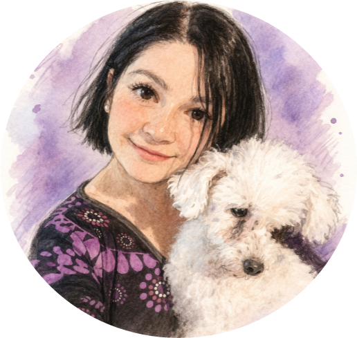
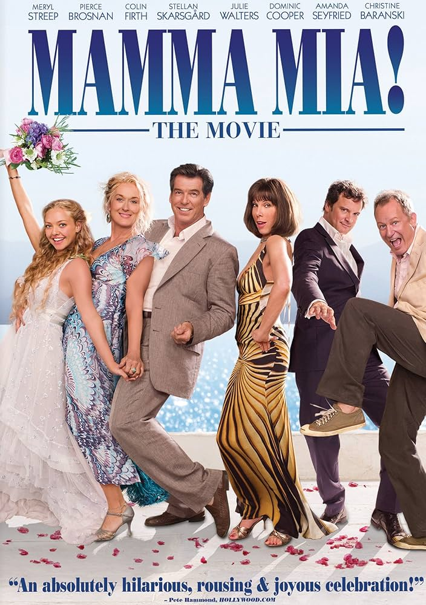
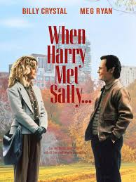
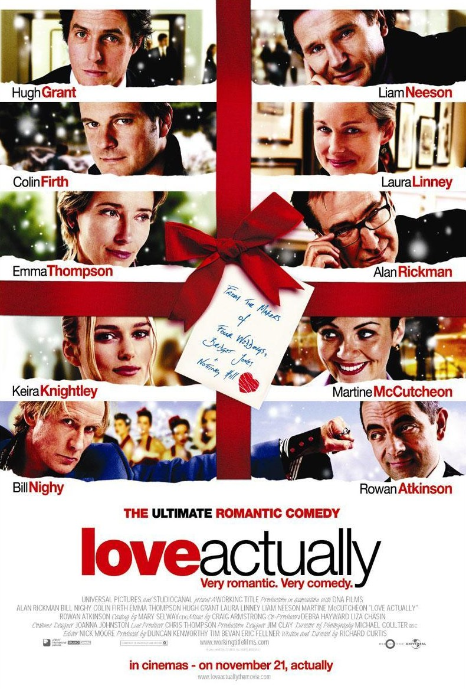
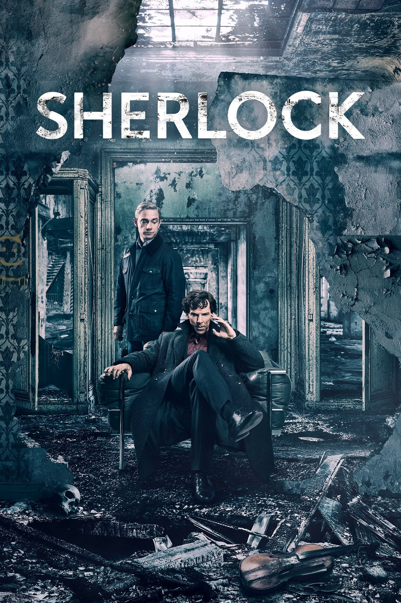
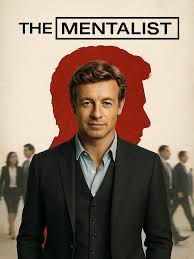
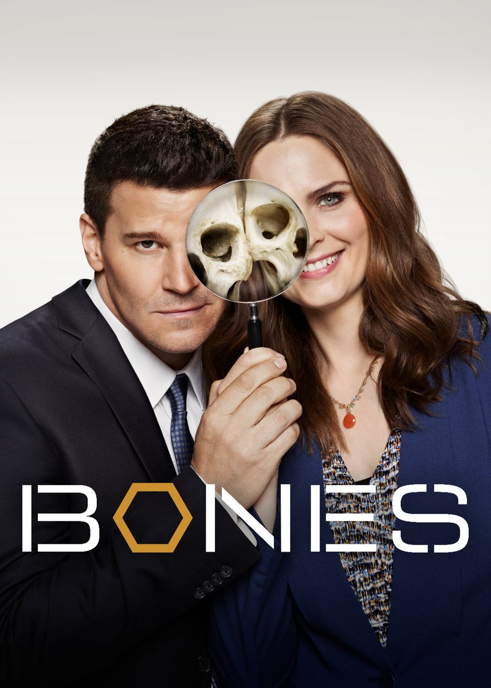
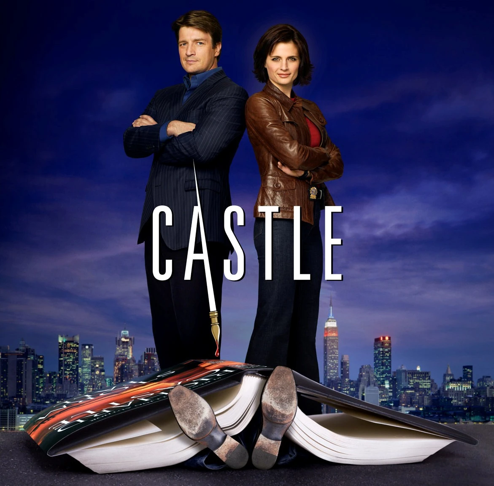
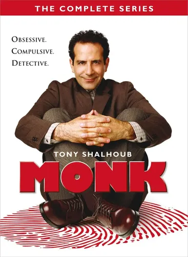
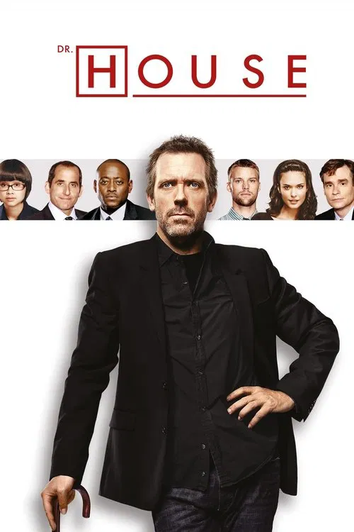

Alfabetización
Me interesa especialmente acompañar procesos de lectura y escritura en la infancia, creando propuestas significativas y cercanas.
Mi página personal
Maestra, estudiante de Desarrollo de Software y amante de los animales.

Mi nombre es Natalia Burnazzi, aunque muchos me llaman Naty. Soy maestra, estudiante de Desarrollo de Software y una persona a la que le gusta aprender, crear y encontrar formas de unir mundos que a veces parecen distintos. Trabajo desde hace más de veinte años en el Primer ciclo del Nivel Primario, siendo la alfabetización inicial lo que más me apasiona, porque acompañar a los chicos en sus primeros descubrimientos con la lectura y la escritura me parece algo profundamente valioso y maravilloso.
Este año estoy atravesando un desafío nuevo y muy movilizante: enseñar Filosofía para niños y Programación en 1°, 2° y 3° grado. Me entusiasma mucho poder acercar a mis estudiantes tanto al pensamiento crítico como al pensamiento computacional, porque siento que en esos espacios hay lugar para preguntar, crear, probar, pensar y volver a intentar.
También soy acompañante terapéutico, aunque no ejercí ese rol de manera formal. Aun así, esa formación me dio herramientas muy valiosas para mirar con más sensibilidad los procesos de cada niño. Además, estudié algunos cuatrimestres de LSA, una experiencia que me acercó aún más a la diversidad y a otras formas de comunicación.
Fuera del trabajo y del estudio, hay otra parte muy importante de mí: los animales. Me gusta acompañar, transitar y cuidar perritos hasta que puedan encontrar adopción, y siento una ternura muy especial por los más viejitos. De alguna manera, esa parte también convive con todo lo demás que me forma: la docencia, la tecnología y este camino de seguir aprendiendo y creando.
Me interesa especialmente acompañar procesos de lectura y escritura en la infancia, creando propuestas significativas y cercanas.
Estoy dando mis primeros pasos en desarrollo web y me entusiasma aprender a crear páginas claras, prolijas y con identidad propia.
Me interesa pensar herramientas tecnológicas con sentido pedagógico, especialmente para acompañar distintas formas de aprender.

Me gusta esta película por cómo las canciones acompañan y cuentan toda la historia. Más allá de que la música de ABBA me recuerda mucho a mi infancia, lo que más me fascina es cómo las canciones son parte del guión de una manera tan natural que parecen contarlo todo juntos.

Es una de esas películas que, si la encuentro empezada, me quedo viéndola igual. Tiene momentos tiernos, momentos graciosos y ese encanto tan especial de las películas simples y lindas que siempre funcionan, especialmente un domingo a la tarde.

Me encanta por sus actores y también la forma en que va mostrando distintas historias y personajes que, de a poco, terminan conectándose. Cada mini historia tiene algo especial y juntas hacen que la película tenga mucho encanto y se disfrute de principio a fin.

Sherlock (serie de la BBC, 2010-2017) es una adaptación moderna de los relatos de Arthur Conan Doyle, donde el detective Sherlock Holmes (Benedict Cumberbatch) y el Dr. John Watson (Martin Freeman) resuelven crímenes complejos en el Londres del siglo XXI usando tecnología actual, blogs y deducción avanzada.

The Mentalist (El Mentalista) trata sobre Patrick Jane (Simon Baker), un ex-falso psíquico que trabaja como consultor independiente para el CBI (Oficina de Investigación de California). Utiliza sus excepcionales habilidades de observación, deducción, manipulación mental e hipnosis para resolver casos criminales complicados.

Bones es una serie de drama criminal y misterio que sigue a la antropóloga forense Dra. Temperance Brennan y al agente especial del FBI Seeley Booth. Juntos resuelven complejos asesinatos analizando restos humanos descompuestos o quemados, combinando la ciencia rigurosa de Brennan con la intuición de Booth.

Castle es una serie procedimental de misterio y comedia dramática que sigue a Richard Castle (Nathan Fillion), un famoso y carismático escritor de novelas de misterio, quien se une a la detective Kate Beckett (Stana Katic) del Departamento de Policía de Nueva York para resolver crímenes tras sufrir un bloqueo creativo.

Monk es una serie de comedia dramática y misterio centrada en Adrian Monk (Tony Shalhoub), un ex detective brillante de San Francisco con trastorno obsesivo-compulsivo (TOC) y múltiples fobias. Tras el asesinato de su esposa, Monk trabaja como asesor privado para resolver casos complejos mientras lidia con su trastorno y busca al asesino de su mujer.

House es un drama médico centrado en Gregory House, un médico brillante pero cínico y antisocial que dirige un equipo de diagnóstico en el Hospital Princeton-Plainsboro. La serie se enfoca en resolver enfermedades raras y complejas, con House utilizando métodos poco ortodoxos y la premisa de que "todos mienten".
La música me acompaña mucho y mi gusto es bastante amplio: hay rock, pop, clásicos de los 80, canciones para cantar fuerte y otras para escuchar tranquila. Entre lo que más me gusta están ABBA, Attaque 77, Babasónicos, Miranda!, Los Tipitos, Airbag, La Renga, Tan Bionica, Massacre, No te va a Gustar y Soda Stereo. Te dejo una playlist con algunas de las canciones que más me gustan.
Escuchá mi playlistSi querés dejar un mensaje o simplemente pasar por esta parte de la página, te dejo este pequeño espacio de contacto.¡Gracias por leerme!